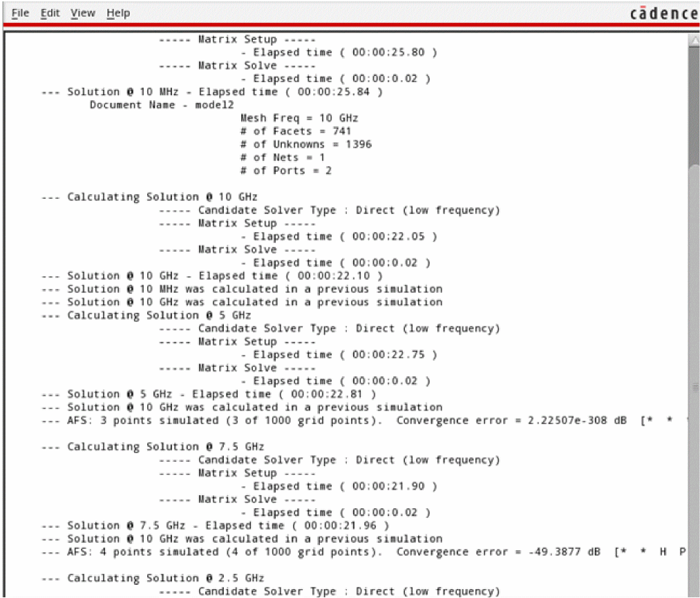
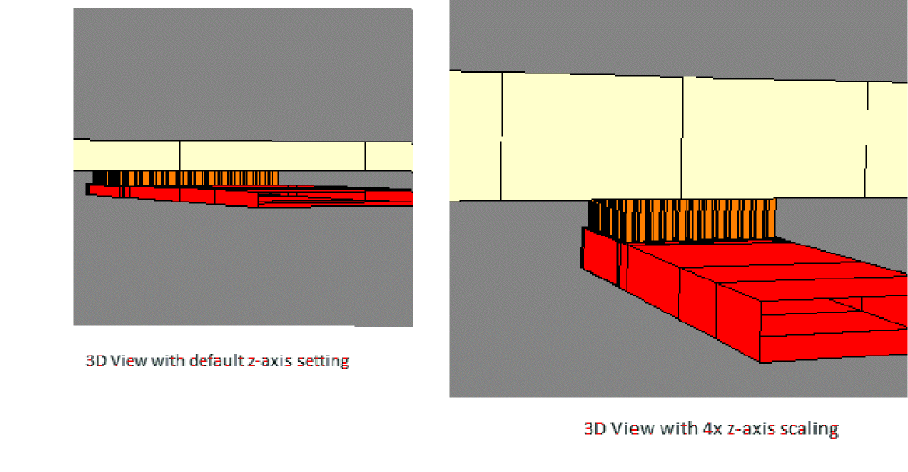

2
Running EM Extraction
This chapter describes how to configure settings for running EM extraction for IC and package layouts using the EM solvers integrated with the Electromagnetic Solver assistant.
This chapter covers the following sections:
- Configuring Settings for Electromagnetic Simulations
- Distributing Extraction Runs to Multiple Resources
- Running a Clarity Simulation
- Running a Sigrity 3D-EM Simulation
- Running an AXIEM Simulation (For IC Layouts Only)
Configuring Settings for Electromagnetic Simulations
Before running an electromagnetic simulation, use the Simulation Settings form to configure the settings to be used for the simulator you want to use.
To open the Simulation Settings form:
The
This form contains the three tabs:
- General: Provides general settings for 3D-EM extraction
- Clarity: Provides options specific to the Clarity simulator
- 3D-EM: Provides options specific to the Sigrity 3D-EM simulator
- AXIEM: Provides options specific to the AXIEM simulator
General Settings
The General tab contains the common settings used by 3D-EM and AXIEM simulators.
This tab contains two sections:
-
Frequency Sampling
This section specifies the following frequency settings to be used by the simulator:-
Advanced Frequency Sweep: Enables fast, but accurate computation. When cleared, the simulator uses point-by-point frequency sweep and takes longer to complete the simulation.
Default value:Selected -
Explicit DC Solution: Enables calculation of S-parameters at DC. The DC data is saved in the Touchstone file format. Sets the minimum frequency to
0and calculates the S-parameter at DC.
Related environment variable: ExplicitDC -
Frequency Min(Hz): Sets the minimum frequency for the frequency sweep. For DC, set this field to
0Hz.
Default Value:10MHz -
Frequency Max(Hz): Sets the maximum frequency for the frequency sweep.
Default Value:10e9 -
Sampling Type: Specifies the frequency sampling type for the frequency sweep.
Possible values areLinear,Log, andMixed. Mixed type provides combined log sampling (at low frequencies) and linear sampling (at high frequencies).
Default Value:Linear -
Log Points per Decade: This field is enabled only when the Sampling Type is set to
LogorMixed. It specifies the log points per decade for log sampling.
Default Value:10 -
Transition Frequency (Hz): This field is enabled only when Sampling Type is set to
Mixed. It specifies the transition frequency for switching between log sampling and linear sampling.
Default Value:10e6 -
Linear Frequency Step Size (Hz): This field is enabled only when Sampling Type is set to
LinearorMixed. It specifies the step size for linear sampling.
Default Value:10e6
-
Advanced Frequency Sweep: Enables fast, but accurate computation. When cleared, the simulator uses point-by-point frequency sweep and takes longer to complete the simulation.
-
Solver Options
This section contains only one option given below.-
Max Number of CPU to use in simulation: Specifies how many CPU cores you want to use to run the simulation.
Related environment variable: MaxNumCPU
-
Max Number of CPU to use in simulation: Specifies how many CPU cores you want to use to run the simulation.
Settings for Clarity
You can specify the settings for the Clarity simulator on the Clarity tab shown below.
This tab contains the following settings:
-
Adaptive Solution
This section contains the following options:-
Solution Frequency (Hz): Specifies the frequency at which the adaptive solution is performed. This is typically set to Frequency Max.
Default Value:10e9 -
Max Number of Adaptive Mesh Iterations: Specifies the maximum number of mesh refinements that can be performed. Adaptive meshing stops when the specified number of iterations are complete or Target Delta S is attained, whichever comes first.
Default Value:50 -
Adaptive Refinement Percentage (%): In each mesh refinement iteration, increase in number of unknowns is less than the specified percentage of existing number of unknowns.
Default Value:10 -
Target Delta S: Specifies the target s-parameter difference to be attained. Adaptive meshing stops when the target difference is attained or the maximum number of adaptive mesh iterations are complete, whichever comes first.
Default Value:0.02 -
Min Number of Adaptive Iterations: Specifies the minimum number of mesh refinements to be performed. Adaptive meshing does not stop until the refinement pass is equal or greater than this number.
Enter a number equal to or greater than3. However,3is used if a number less than3is entered.
Default Value:1 -
Min Number of Converged Iterations: Specifies the number of times the convergence criterion must be met consecutively for the adaptive mesh algorithm to converge. For example, if this is set to
2, adaptive meshing does not stop until the convergence criterion is met twice in a row.
Default Value:1
-
Solution Frequency (Hz): Specifies the frequency at which the adaptive solution is performed. This is typically set to Frequency Max.
-
Solver Options
This section contains the following options:-
Metal Type: Specifies the metal type to be used.
Possible values are:-
Metal_Inside: Model metals with elements inside metals. This type is least memory efficient. It provides more accurate low frequency resistance. It also provides a different solution as compared toMetal_Skin_Impedanceat high frequency range.
This type is recommended when Explicit DC is needed. -
Metal_Skin_Impedance: Model metals with a frequency dependent skin effect impedance boundary conditions on the exterior surfaces of the metals. This type provides very accurate high frequency resistive loss. This type is recommended for most applications.
Default Value:Metal_Insidefor IC layouts,Metal_Skin_Impedancefor package layouts -
-
Basis Function Order: Describes the mesh element polynomial type.
Possible values are:-
ZERO: Uses 0th order elements with linear E-fields inside the element and constant E-fields along an edge. This uses less memory than the 1st order with the same number of elements, but requires finer (more) elements to achieve solution convergence. -
FIRST: Uses high order elements with high order polynomial E-fields inside the element and along an edge. This uses more memory than 0thorder with the same number of elements, but requires fewer elements to achieve solution convergence.
Default Value:FIRST -
-
Matrix Solver: This field is set to
Automatic, which implies that the solver automatically switches to out-of-core (OOC) solvers when necessary.
-
Metal Type: Specifies the metal type to be used.
-
Geometry Options
This section contains the following options:-
Meshing Algorithm: This field is set to
DMesh, which implies that Clarity uses an MCAD meshing process to generate the material and the.w3dfiles. The generated mesh is coarser in nature. -
dz+ (in um): Defines the thickness of the top air buffer, which is the distance (buffer zone size) between the simulation region (outer box) and the design (inner box) on the +Z axis.
Default Value:1000 -
dz- (in um): Defines the thickness of the bottom air buffer, which is the distance (buffer zone size) between the simulation region (outer box) and the design (inner box) on the -Z axis.
Default Value:100 -
um: Specifies the condition for dz+ or dz-.
Possible values are:
Default Value:Approximately Open(for both dz+ and dz-) -
Signal Net Max Edge Length: Specifies the maximum length for the edges of triangles used to create the surface mesh on signal nets.
Default Value:-1000um
-
Meshing Algorithm: This field is set to
-
Additional Outer Box Settings
The simulation region in Clarity is larger than the geometry bounding box defined by minimum and maximum x-y-z dimensions of the design. The settings in this section define distances (buffer zone size) between the simulation region (outer box) and the design (inner box).
As a rule of thumb, the buffer zone size should be 5-10 times of the distance between top and bottom metal layers.
The Buffer Size group contains the following settings:-
dx+: Defines the distance (buffer zone size) between the simulation region (outer box) and the design (inner box) on the +X axis.
Default Value:1000 -
dx-: Defines the distance (buffer zone size) between the simulation region (outer box) and the design (inner box) on the -X axis.
Default Value:1000 -
dy+: Defines the distance (buffer zone size) between the simulation region (outer box) and the design (inner box) on the +Y axis.
Default Value:1000 -
dy-: Defines the distance (buffer zone size) between the simulation region (outer box) and the design (inner box) on the -Y axis.
Default Value:1000
You can also specify how to model the outer box surfaces. Possible values are:
Default Value:Perfect Electrical Conductorfor IC designs,Approximately Openfor IC designs -
Conformal Outer Box: Conformal outer box is used to enforce the exterior boundary to be the same as the metal shape profile in the XY plane. If this check box is clicked, the side walls of the outer box are determined by the enabled cutting polygon.
As Clarity targets non-radiation structures, and at a certain distance, the field decays almost to zero, the boundary distance from the structure must be large enough to allow fields to decay to zero. -
Dielectric Buffer Size: If set to
0, the outer box side walls are coincident with the enabled cutting boundary. When the Outer Box Boundary condition is set toABC, it approximates an open region that extends to infinity, and removes the truncation boundary reflections.
If set to a value greater than0, the outer box side walls are based on the enabled cutting boundary and are expanded by this value.
Default Value:0 -
Boundary Conditions: Specifies how to model the boundaries and side walls of the outer box.
Choose one of the following models from the drop-down list that containsPEC,PMC,ABC.
Default Value:Perfect Electrical Conductorfor IC designs,Approximately Openfor IC designs
-
dx+: Defines the distance (buffer zone size) between the simulation region (outer box) and the design (inner box) on the +X axis.
Settings for 3D-EM
You can specify the settings for the Sigrity 3D-EM simulator on the 3D-EM tab shown below.
This tab contains the following settings:
-
Adaptive Solution
The settings in this section are same for both Clarity and 3D-EM. For details refer to Settings for Clarity. -
Frequency Sampling
This section contains the following options:-
KMOR Diagonal Convergency: Specifies the convergence requirement for S-Parameter matrix diagonal terms during frequency sweep. This field is enabled only when the Advanced Frequency Sweep check box is selected.
Default Value:0.02 -
KMOR Off Diagonal Convergency: Specifies the convergence requirement for S-Parameter matrix off-diagonal terms during frequency sweep. This field is enabled only when the Advanced Frequency Sweep check box is selected.
Default Value:0.02
-
KMOR Diagonal Convergency: Specifies the convergence requirement for S-Parameter matrix diagonal terms during frequency sweep. This field is enabled only when the Advanced Frequency Sweep check box is selected.
-
Solver Options
The settings in this section are same for both Clarity and 3D-EM. For details refer to Settings for Clarity.The Basis Function Order drop-down list shows an additional option,MIXED, for 3D-EM. TheMIXEDfunction order uses both 0th and 1st order elements together to reduce memory consumption, while maintaining the accuracy level of the 1st order elements. By using mixed order elements, both memory usage and run time is reduced approximately by 5%. -
Geometry Options
All settings except Meshing Algorithm are same for both Clarity and 3D-EM. For details refer to Settings for Clarity.-
Meshing Algorithm: Choose one of the following algorithms for 3D tetrahedral element generation:
-
Default Mesh: This is an improved mesh algorithm. -
Coarser Initial Mesh: This is the classic meshing algorithm used in earlier versions of 3D-EM. Initial meshes generated with this algorithm are usually smaller than the default algorithm. -
Extrusion Mesh: With this algorithm, polygons and shapes of all layers are used to form a composite polygon. The composite polygon is filled with many triangular elements. These triangular elements are then extruded in the thickness direction according to the stack-up to form many triangular prism elements in the space. Finally, each triangular prism is divided into three tetrahedral elements.
This algorithm does not work for designs with bonding wires. Other than 2-layer designs, initial meshes by Extrusion Mesh are usually larger than initial meshes by the other two algorithms. -
Sigma Mesh: This is an MCAD meshing process. 3D-EM uses it to generate the material and the.w3dfiles. If the sigma mesh fails, the default meshing algorithm is applied to regenerate the meshing files. -
DMesh: This meshing algorithm is similar to Sigma Mesh, but allows creation of a coarser mesh. You can use this option to increase the meshing success rate.
-
-
Meshing Algorithm: Choose one of the following algorithms for 3D tetrahedral element generation:
-
Additional Outer Box Settings
The settings in this section are same for both Clarity and 3D-EM. For details refer to Settings for Clarity.
Settings for AXIEM
Use the General tab on the Simulation Settings form to specify the common settings for 3D-EM extraction.
You can specify the settings for the AXIEM simulator on the AXIEM tab shown below.
The AXIEM tab contains the following settings:
Mesh: This section contains the options to control the geometry of the mesh AXIEM creates for the model.
-
Density: Specifies the global setting that defines how dense you want to keep the mesh.
Possible values areNormal,High,Low, andNoVariable.
Default isNormal.
TheNormal,High,Lowoptions adjust the number of elements relative to a wavelength, whereLowis set to give the minimum required for a reasonable solution,Highis for improved accuracy, andNormalis a good default for both. When set toNoVariable, the maximum mesh size is one grid size.
The following figure shows the line with normal density.
The following figure shows the line with low density.
The following figure shows the line with high density.
The following figure shows the line with novariable density.
For certain metal shapes, you can choose to apply different mesh settings. For example, if there are unrelated shield or fill shapes, you might choose to use less dense mesh for them. To apply different mesh density settings, override this global density setting for selected shapes by setting the AXIEMMeshDensity property for them. For this, right-click a shape and choose Properties to open the Edit <shape> Property form. Specify the mesh density setting value in the AXIEMMeshDensity field on the Property tab. Possible values:Normal,High,Low,NoVariable.-
Model as zero thickness: Specifies that each metal is to be a thin plane with almost zero thickness.
AXIEM can simulate metal traces with or without thickness. In either case, the loss of the metal can be calculated accurately. However, coupling between lines that are close cannot be approximated with thin metal, so thickness might be necessary. In order to simulate with thickness, you must define your metal properties as conductances with thicknesses and NOT impedances. Even with the proper conductor setup, the default in AXIEM is to simulate as thin metal. From the mesh properties, you must tell AXIEM to simulate with thick metal. This option can be set per EM structure or per shape.Similar to the mesh density, you can override this setting for specific shapes to model those shapes with or without thickness irrespective of the global setting specified on this form. For this, right-click a shape and choose Properties to open the Edit <shape> Property form. Select or deselect the AXIEMZeroThickness check box on the Property tab. -
Edge Mesh Thin Metal: Specifies that the mesh is to be created upto the edge of thin metals. When this option is enabled, a small mesh is located on edge of each shape being meshed, as shown below.
The thickness of the edge mesh is the minimum mesh size determined for the structure. Since currents want to flow on the edges of conductors at microwave frequencies, an edge mesh is important to get accurate simulation results.
-
Model as zero thickness: Specifies that each metal is to be a thin plane with almost zero thickness.
-
Minimum Edge Length (um): Determines the minimum mesh cell edge length in microns. A smaller value results in a denser mesh. Default value:
2 m
m - Advanced: You can use the text area provided in this subsection to specify any advanced setting for AXIEM to control the mesh.
Solver: This section contains settings specific to the AXIEM simulator.
-
Accuracy: Controls the accuracy of the matrix entries. Increasing the accuracy of the entries can improve the accuracy of the solution at the expense of longer simulation times. The default value is conservative and usually gives good overall accuracy. Structures with very tight coupling (such as a thin film capacitor) require relatively accurate matrix entries for an accurate solution. Problems that involve signal lines without any tightly coupled geometries can often have the matrix accuracy reduced without significant degradation of the overall solution accuracy, and a significant reduction in the matrix fill time.
-
Enable De-embedding: Performs an additional post-processing step on the data to remove the effects of parasitics associated with the ports. The parasitics associated with the ports in AXIEM are relatively small, so it is not always necessary to de-embed. De-embedding is recommended for simulations that require very high precision (such as the simulation of a very small discontinuity like a bend), or when a reference plane shift is desired for the port solution (when a reference plane shift is specified on a port, it is only used if de-embedding is enabled).
Default value:True (Selected)
-
Enable De-embedding: Performs an additional post-processing step on the data to remove the effects of parasitics associated with the ports. The parasitics associated with the ports in AXIEM are relatively small, so it is not always necessary to de-embed. De-embedding is recommended for simulations that require very high precision (such as the simulation of a very small discontinuity like a bend), or when a reference plane shift is desired for the port solution (when a reference plane shift is specified on a port, it is only used if de-embedding is enabled).
-
AFS Tolerance (dB): A relative number (in dB) that controls the accuracy of the Advanced Frequency Sweep (AFS) solution.
AFS speeds up EM simulations of EM structures through an optimal choice of the frequencies at which to perform the EM simulations. AFS saves time by significantly reducing the number of points at which the EM simulations need to be performed, while still maintaining the required accuracy.
A lower tolerance setting requires fewer frequency points, but the accuracy of the solution might not be acceptable. Also, if the tolerance is too loose, the AFS result might have a "false convergence". If you adjust this option, 5 dB steps are recommended.
Geometry Options: This section specifies the enclosure or boundary settings for the EM structure or geometry. AXIEM is an open boundary solver that can correctly solve radiation into an open space. The top layer in the dielectric stackup is modeled as Air. The EM structure is not defined within a metallic box; however, you can define conducting Top and Bottom Boundary conditions listed below.
-
Top Air (um): Specifies whether the top is perfectly conducting or it is approximately open.
By default, it is set asApproximately Open. You can change it toPerfect Conductor.If the top layer specified in the dielectric stackup is not "Air", and the Top Boundary is set toApproximately Open, the media above the top dielectric layer is modeled as"Air"with the relative dielectric permittive value equal to 1.0. Similarly, if the bottom layer specified in the dielectric stackup is not"Air", and the Bottom Boundary is set to Approx Open, the media below the bottom dielectric layer is modeled as "Air" with the relative dielectric permittivity equal to 1.0. -
Bottom: Specifies whether the bottom is perfectly conducting or it is approximately open.
By default, it is set asPerfect Conductor. You can change it toApproximately Open. - Advanced: You can use the text area provided in this subsection to specify any advanced solver setting for AXIEM.
Distributing Extraction Runs to Multiple Resources
Running extraction for large designs can be resource-intensive. Therefore, you can distribute the task to multiple computers in a computer farm by specifying a Distributed Resource Management System (DRMS) command. A DRMS command is the command submitted to distribute jobs to a workload job scheduling software, such as LSF or OpenLava.
To distribute the runs for electromagnetic extraction, specify the bsub DRMS command by using the drmsCommand environment variable. Virtuoso prepends the DRMS command to the command that launches the Sigrity 3D-EM or AXIEM solver. After the run is successfully complete, the solver collates the results and writes into a touchstone file.
Running a Clarity Simulation
The Clarity Solver uses a three-dimensional (3D), full-wave, finite element method (FEM) field solver, and returns accurate simulation results.
To run a simulation using the Clarity solver, perform the following steps:
- Review the simulation settings on the Clarity tab of the Simulation Settings form.
- Select a model in the Models section.
-
Ensure that
Clarityis selected in the Simulator column. - (Optional) Review the EM layout to verify the geometries being sent to the solver for simulation.
- On the toolbar of this assistant, choose Open Simulator – Create and Edit.
-
In the Choose License Suites form that appears, do the following:
- Select Clarity 3D.
- Select Save the chosen suites and do not prompt again.
-
Click Close.
If you need to use the same license suite every time Clarity is launched, use the CDS_CLARITY_LICENSE shell environment variable to specify a default license suite. When this variable is set, Virtuoso looks for the specified license before launching Clarity. If found, Virtuoso does not display the Choose License Suites form.
- Loads the model definition and creates the layout database that is ready for simulation
-
Saves the database in
.spdfiles -
Opens the Sigrity Suite environment window and loads the
.spdfile.
This window displays the instances and nets you selected for inclusion in the model, as shown below.
- Make the following changes in the Layer Selection assistant:
-
Click Set up Computer Resources in the Workflow assistant to configure the setup.
The Setup form is displayed. -
Depending on the resources you want to use for simulation run, you can configure the settings to use a remote server farm or the localhost. However, ensure that the resource must have a minimum of 32GB memory per slot
For details about the settings on the Setup form, refer to Chapter 3, Simulation Flow in the Clarity 3D Layout User Guide. -
After specifying the resources, click Save on the Setup form to save the setup.
Once done, the setup is saved in the~/.cadence/Clarity/configSave.jsonfile. This setup is automatically read from this file before running simulations. -
To review the model in 3D view, click Show Geometry 3D View in the View, Check, and Process Result section of the Workflow assistant.
The following figure shows an example 3D view of an inductor selected for a model.
For bond wires included in models, Clarity creates a coaxial port for the net connected to the bond wire, as shown in the example given below.
-
Click Start Simulation on the toolbar of Sigrity Suite window to run simulation.
When the simulation is complete, the results are displayed in the Network Display tab. - To review the mesh created by Clarity, click Show Clarity 3D EM Field in the View, Check, and Process Result section of the Workflow assistant.
-
You can review the results in the Network Display tab of this window or in Virtuoso Layout EXL, and then continue with backannotation of results, as explained in the Creating Models as Extracted Views.

Running a Sigrity 3D-EM Simulation
The Sigrity 3D-EM Solver uses a three-dimensional (3D), full-wave, finite element method (FEM) field solver, and returns accurate simulation results.
To run a 3D EM simulation using the Sigrity 3D-EM simulator, perform the following steps:
- Select a model in the Models section.
-
Ensure that
3D-EMis selected in the Simulator column. - On the toolbar of this assistant, choose Open Simulator – Create and Edit.
-
If the Choose License Suites window appears, do the following:
The tool does the following:- Loads the model definition and creates the layout database that is ready for simulation
-
Saves the database in
.spdfiles -
Opens the PowerSI 3D-EM environment window and displays the instances and nets you selected for inclusion in the model, as shown below.
-
Click Start Simulation in the left pane to start the EM simulation in Sigrity 3D-EM.
The progress of simulation is displayed in the Output pane.
-
When the simulation is complete, click Show Geometry 3D View in the View, Check, Process Result section of the left pane.
The 3D view of the layout is displayed.
The 3D box with hatched white lines represents the simulation region for the model. -
Use the left mouse button and the mouse wheel to rotate the 3D view and verify the model details.
You can also check the coaxial ports created for the bumps.
-
Click Show 3D-EM Field in the left pane to view the finite element mesh created for the model, and then click OK to close the message box.
The 3D EM Display Control opens in the right pane. -
From the tree of metal layers that is displayed in 3D EM Display Control, select the metal layers you want to review.
- Review the mesh.
-
Close Sigrity 3D-M assistant.
The details for the model are saved in a.spdfile. -
In the Electromagnetic Solver assistant, click Refresh Simulation Status on the toolbar to view the updated simulation status for the model.
The status is changed todoneand the path to the results file is displayed into the Results tab on the Electromagnetic Solver assistant. You can now proceed with Creating Models as Extracted Views.
Running an AXIEM Simulation (For IC Layouts Only)
The AXIEM simulator is a solver that solves the currents on conductors that can be embedded in a stackup of layers. It is a command-line utility integrated with Virtuoso Layout Suite EXL.
To run a simulation using the AXIEM solver, perform the following steps:
- Review the simulation settings on the AXIEM tab of the Simulation Settings form.
- Select a model in the Models section.
- Select AXIEM in the Simulator column for the model.
- Generate and validate ports for the model.
- (Optional) Specify pre-processing options.
- (Optional) Review the EM layout to verify the geometries being sent to the solver for simulation.
-
Choose Open Simulator – Generate Mesh on the toolbar to generate a mesh for the model.
The EM Solver assistant sends the geometry to AXIEM, which creates a 3D model for the selected geometry by identifying smaller sections that together form a mesh. If all the ports are valid and a mesh is successfully created, AXIEM saves the mesh in a.vmeshfile for your layout. Virtuoso then launches the 3D Viewer to display the mesh.
The following figure shows an example of a 3D mesh displayed in the 3D Viewer.
Use the commands available in the 3D Viewer to review the mesh. For more details, see Reviewing the Mesh Created by AXIEM in Virtuoso 3D Viewer.
The tool also displays a status log. If the mesh is not created successfully, you can review this log and make the suggested corrections.
In addition, Virtuoso shows the simulation log information from AXIEM in the CIW. -
If the generated mesh meets your requirements, choose Open Simulator – Mesh and Simulate on the toolbar to run simulation for the model.
AXIEM recreates the mesh and runs simulation. During the simulation run, AXIEM uses the settings specified on the General and AXIEM tabs of the Simulation Settings form to compute the electric field in each section of the mesh.
A log window is displayed to show the run status and summary of progress, as shown below.
If you need to stop a simulation before it is complete, choose Open Simulator – Stop. -
After the run is complete, click Refresh Simulation Status on the toolbar of the Electromagnetic Solver assistant to view the updated simulation status for the model.
The status changes todoneand the results are loaded into the Results tab of the assistant. The path to the s-parameter file created by AXIEM is displayed in the S-Params field on this tab. - Create an extracted view for the model. For more details, refer to Creating Models as Extracted Views.
Reviewing the Mesh Created by AXIEM in Virtuoso 3D Viewer
Before running a simulation for a model, it is recommended that you generate and review the mesh for the datasets selected for the model.
For a new model, you can generate a mesh by using the Open Simulator – Generate Mesh command on the toolbar of the Electromagnetic Solver assistant. This command creates a mesh and saves it in a .vmesh file and then it launches Virtuoso 3D Viewer to display the generated mesh.
If the mesh already exists, use the Open Simulator – View 3D Mesh command on the toolbar to open the most recent .vmesh file in the 3D Viewer.
By default, the 3D Viewer displays the mesh in the canvas as a flat view. To view the mesh in 3D, click and hold anywhere in the canvas and drag the pointer slightly in the direction of interest.
Look for any unintentional opens or shorts in your structure. You can also check how well you have configured your circuit for simulation. The most common problem is over-meshing a structure, which can result in a significantly longer simulation run time.
While reviewing the mesh, you can use the following commands or controls available in the 3D Viewer:
- Use the View toolbar to change the zoom settings or to view the mesh from different directions, such as, top view or right view. By hiding, showing, rotating and zooming, you can focus on specific items you want to observe in the mesh.
- Rotate the orientation axes at the bottom left of the canvas to set the direction from where you want to look at the mesh.
-
To to see thin layers clearly or to view the mesh between the layers, increase the z-axis by choosing a scaling factor on the View toolbar.
The following examples shows a comparison of layers in the default view and with the z-axis with 4x scaling.
 - Use the Display Options toolbar to control the visibility of wire frames or orientation axes on the canvas.
- Use the check boxes in the Layers assistant to display or hide layers and the shapes on those layers.
- Use the check boxes in the Nets assistant to control the visibility of nets and the metal islands connected to them.
-
Use the Highlight Color command on the Nets assistant to change the coloring mode for nets. By default, the nets and the metal islands connected to them electrically are displayed in the layer color. You can toggle this command to use a unique color for each net and the metal island connected to it.

See Virtuoso 3D Viewer for details about these commands.
Return to top